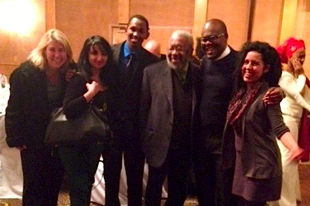

Friends,
Thank you, thank you, THANK YOU!
Your sustaining support of FOR has made so much possible for us this year. So I wanted to take a moment to express our gratitude and update you on some of our recent work.
Last week a delegation of 14 Fellowship of Reconciliation members traveled to Ithaca, New York to honor two lifetime peacemakers with FOR's 2013 Martin Luther King, Jr. Peace Award. For their visionary, courageous, and persevering work in building the Beloved Community, Dr. Dorothy Cotton and Dr. Vincent Harding received this year's MLK Award during the "Gala in Support of Human Rights" hosted by the Dorothy Cotton Institute on Tuesday evening.
In her acceptance speech, Ms. Cotton said, "We can't wait for the second coming of Martin Luther King!" and urged each person there to organize, educate, and work for peace and justice. WE are the ones we've been waiting for.
Can you join me in making an extra year-end gift today to FOR's grassroots work for social change?

As FOR-USA shifts our framework to more directly confront the seeds of violence that take root here in the United States, we are heeding Dorothy Cotton's call. By responding to the grassroots needs articulated by our communities, FOR is creating cultures of peace through the transformative power of nonviolence.
Right now, as I write, FOR staff and fellows are making a profound difference in local communities around the nation.
- Lucas Johnson is in Nashville TN on the 21st Century Freedom Ride, traveling through five cities in the South to strengthen an intergenerational movement against mass incarceration and immigrant deportation.
- John Lindsay-Poland is in Oakland CA, coordinating the Bay Area New Priorities Campaign, taking the message of Jobs Not Wars to the streets.
- Shauen Pearce is in Minneapolis MN, organizing a nonviolence curriculum for students at the Friends School of Minnesota and laying the groundwork for The Future Is NOW, a national conference on peacemaking and activism for youth and young adults in August 2014.
- Susana Pimiento is in Austin TX, connecting those working on U.S./Mexico border issues to pressing human rights abuses throughout the hemisphere, including linking next month's Facing Tear Gas actions in Texas to the Continental Campaign against Foreign Military Bases.
- Leila Zand is in Albany NY, educating and mobilizing against drones, and this week our members and allies in upstate New York pushed Syracuse to become the fifth U.S. city to pass anti-drone legislation.
- And our four global fellows in this year's IFOR Fellowship School are finishing nine weeks of nonviolence and peacemaking training at our national headquarters in New York.
These are just a few of the ways FOR is making a difference this month.
Through your generous sustaining support of FOR, you have shown your belief in FOR's impact to make peace in our local communities today.
I join you in that belief, and my family and I are making a large year-end donation to the Fellowship. Can you support us once again with a special donation today?
Please join me in responding to Dorothy Cotton's call and take up the work of activism and transformation by making a year-end donation to FOR.
FOR has been transforming individuals and communities since 1915, and the need for peacemakers continues. Let us remember: We are the ones we've been waiting for!
Grace and peace,
 Rev. Kristin Stoneking Rev. Kristin Stoneking
Executive Director
Fellowship of Reconciliation
Top photo: Gala in Support of Human Rights, December 10, 2013: FOR Executive Director Kristin Stoneking, IFOR Fellow Nurana Rajabova, IFOR Fellow Amos Furaha, MLK Award Recipient Vincent Harding, FOR Southeast & Mid-Atlantic Organizer Lucas Johnson, IFOR Fellow Rosario Quiroz. Photo by Linda Kelly. |